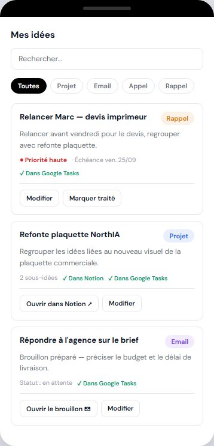

Vocalink : dire une idée, la retrouver prête à agir
Un enregistrement vocal sur téléphone, transcrit et classé automatiquement, prêt à devenir un projet, un e-mail, un appel ou un rappel. Le tout se synchronise avec Notion et Google Tasks, et un e-mail quotidien rappelle ce qui traîne.
L'essentiel
Une idée surgit au pire moment pour l'écrire. Le temps de la noter, elle est à moitié perdue, et une idée notée mais pas classée finit oubliée.

Ce que fait l'IA
- Transcrit la voix
- Classe l'idée : catégorie, titre, priorité, échéance
- Prépare l'action : brouillon d'e-mail, lien d'appel, rappel
Ce qui reste humain
- Rien n'est envoyé seul : l'e-mail reste un brouillon à valider
- Le regroupement des idées par projet
- Ce qui part dans Notion et Google Tasks
Ce que ça change
- Une idée classée en quelques secondes
- Plus d'idées perdues entre deux réunions
- Un e-mail quotidien rappelle ce qui traîne
Le détail, à ouvrir selon ce qui vous intéresse :
Pourquoi ce projet
Le problème
Noter une idée à la main, c'est déjà un effort ; la retrouver ensuite dans les bonnes notes, au bon endroit, avec le bon contexte, en est une seconde. La plupart des idées perdues le sont non pas faute d'avoir été capturées, mais faute d'avoir été classées et reliées à une action concrète.
Comment ça marche
Fonctionnalités
Difficultés et solutions
Outils utilisés
| Catégorie | Outil |
|---|---|
| Framework | Next.js 16 · App Router · Server Actions |
| Langage | TypeScript |
| Base de données | Prisma ORM · PostgreSQL (Neon) |
| Transcription | Whisper API · OpenAI |
| Classification | Claude Haiku · Anthropic |
| Intégrations | Notion API · Google Tasks API (OAuth 2.0) · Resend |
| Authentification | Formulaire + cookie de session (Web Crypto) |
| Hébergement | Vercel · vocalink.northia.fr |
| Tests | Vitest, 25 tests automatisés |
Résultats
Échantillon simplifié et stylisé (structure et couleurs fidèles, contenu allégé) : capture, liste filtrable, fiche d'idée. L'application réelle est protégée par un accès personnel. Données de démonstration, pas d'idées réelles.